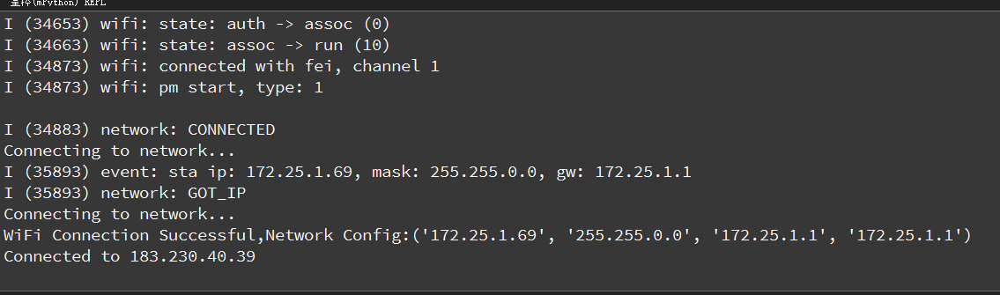
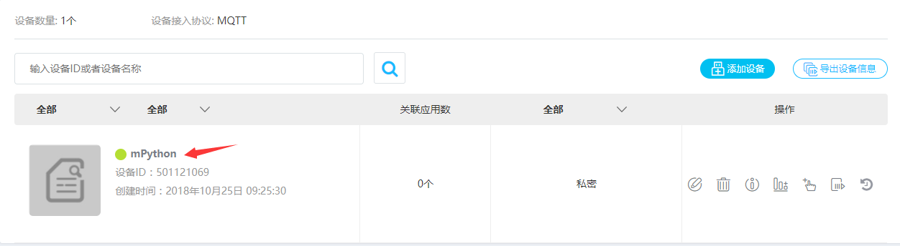

10.1. MQTT协议:1接入OneNET云平台
随着移动互联网的发展，MQTT由于开放源代码，耗电量小等特点，将会在移动消息推送领域会有更多的贡献， 在物联网领域，传感器与服务器的通信，信息的收集，MQTT都可以作为考虑的方案之一。 在未来MQTT会进入到我们生活的各各方面，本篇文章教大家利用掌控板使用MQTT协议接入OneNET平台，并且远程控制RGB LED。
10.1.1. 什么是MQTT协议
早在1999年，IBM的Andy Stanford-Clark博士以及Arcom公司ArlenNipper博士发明了MQTT（Message Queuing Telemetry Transport，消息队列遥测传输）技术 。MQTT（Message Queuing Telemetry Transport，消息队列遥测传输）是IBM开发的一个即时通讯协议，有可能成为物联网的重要组成部分。该协议支持所有平台，几乎可以把所有联网物品和外部连接起来，被用来当做传感器和致动器（比如通过Twitter让房屋联网）的通信协议。
10.1.1.1. OneNET平台准备
OneNET平台创建MQTT协议的产品并添加设备。 OneNET平台官网地址：https://open.iot.10086.cn/，登录成功进入开发者中心，添加一个新产品。

在新建的产品下新建一个设备mPython。

10.1.1.2. 编写程序
程序示例:
from umqtt.simple import MQTTClient
from mpython import *
from machine import Timer
# MQTT服务器地址域名为：183.230.40.39,不变
SERVER = "183.230.40.39"
#设备ID
CLIENT_ID = "deviceID"
#产品ID
username='productID'
#产品APIKey:
password='APIKey'
mywifi=wifi()
def sub_cb(topic, msg):
print((topic, msg))
if msg == b"on":
rgb.fill((50,0,0)) #点亮红灯
rgb.write()
elif msg == b"off": #灭灯
rgb.fill((0,0,0))
rgb.write()
def main(server=SERVER):
#端口号为：6002
c = MQTTClient(CLIENT_ID, server,6002,username,password,keepalive=10) # 保持连接时间间隔设置10秒
c.set_callback(sub_cb)
c.connect()
tim1 = Timer(1) #创建定时器1
tim1.init(period=2000, mode=Timer.PERIODIC,callback=lambda n:c.ping()) # 发送心跳包 ,保持连接
print("Connected to %s" % server)
try:
while 1:
c.wait_msg()
finally:
c.disconnect()
mywifi.connectWiFi("ssid","password")
main()
Hint
修改程序中设备ID、产品ID和APIKEY参数的信息，如下图。
10.1.1.3. 效果展示
当我们给掌控板复位重启，执行开始运行程序。
这个时候我们OneNET云平台上设备状态灯显示绿色，说明在线了
当我们通过页面发送 on 、off 指令的时候，就会看到终端处接受的的消息打印。掌控板上的RGB LED也会相应的改变。